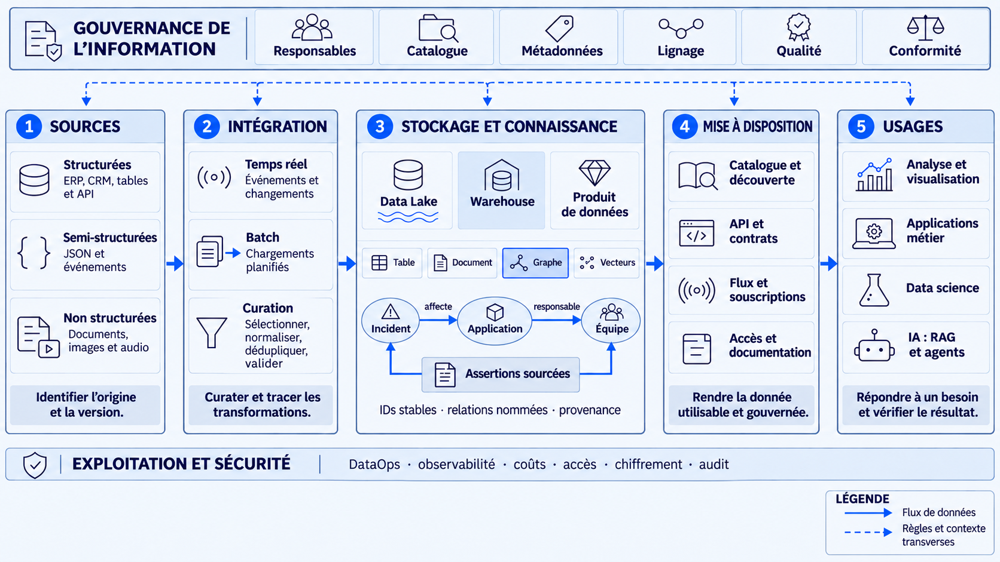

01
Sources
Identifier l'origine, la version et l'autorité.

Des sources dispersées à une information fiable, gouvernée et réutilisable.
À la fin du cours, vous saurez raconter le trajet de la source à la mise à disposition et aux usages.
CRM · centre de contact · e-commerce
Clients · interactions · préférencesERP · stocks · transport · production
Commandes · livraisons · mesures IoTFinance · RH · achats · juridique
Factures · paie · contratsGED · messagerie · wiki · fichiers
PDF · présentations · feuilles ExcelApplications · API · logs · analytics
Clics · événements · incidentsPartenaires · open data · fournisseurs
Météo · tarifs · référentielsUn schéma explicite organise les valeurs.
C42 | FR | 2026-11-12Des clés ou balises portent une organisation souple.
{"client_id": "C42"}Le sens est dans le texte, le son, l’image ou la mise en page.
Avant de transformer : identifier l'autorité, la version et les conditions d'usage.
Doublons, alias, champs absents, formats hétérogènes.
Identité, qualité, version et provenance explicites.
| Dimension | Contrôle concret | Action si échec |
|---|---|---|
| Complétude | Le pays nécessaire à la facturation est renseigné. | Compléter ou bloquer la publication. |
| Validité | Le code pays appartient au référentiel ISO choisi. | Corriger avec une règle traçable. |
| Unicité | La clé de commande ne se répète pas. | Dédupliquer sans perdre l’historique. |
| Cohérence | Le total et les lignes de facture concordent. | Rapprocher les systèmes. |
| Exactitude | L’adresse correspond à une source vérifiée. | Faire confirmer par le responsable. |
| Fraîcheur | La mise à jour respecte le délai du contrat. | Alerter et afficher le retard. |
Quel défaut de donnée ou de contexte pose problème ?
Quelle décision devient moins fiable ?
Quel contrôle, quelle alerte et quel responsable proposer ?
Conserver une copie proche de la source, horodatée et traçable.
pays = "fr"Typer, nettoyer, rapprocher, dédupliquer et valider les données.
pays = "FR"Publier des données métier contrôlées : tables, indicateurs ou produits.
De Raw à Curated puis Gold : contrôler et documenter les transformations, y compris après le stockage.
Le data lineage (lignage) décrit l’origine d’une donnée, les transformations qu’elle a subies et les résultats qui en dépendent. Il permet de remonter une erreur et d’anticiper l’impact d’un changement.
client_id = C42 · pays = « fr »
« fr » → « FR » · contrôle du code pays
source = CRM v3 · transformation = règle v2
Un entrepôt rassemble des données préparées pour des analyses cohérentes et répétées.
Intégration, nettoyage, modèle métier et règles de calcul précèdent la publication.
SQL et BI interrogent des tables organisées ; les indicateurs partagent les mêmes définitions.
Le modèle facilite le reporting ; son évolution et les transformations demandent du travail.
Un lac stocke des données de formats variés, puis permet de les préparer selon les usages.
Fichiers proches de la source, données préparées et contenus multimédias peuvent coexister.
Des moteurs distincts lisent et transforment les données : exploration, traitement distribué, IA.
Sans catalogue, qualité et droits, le lac devient difficile à découvrir et à exploiter.
Une couche de gestion apporte aux fichiers du lac des garanties utiles à l’analyse.
Transactions, suivi des versions et contrôle du schéma s’appuient sur un format de table.
BI et IA peuvent exploiter des tables gouvernées sur un même stockage objet.
Le choix des formats et des moteurs compte ; gouvernance et qualité restent à construire.
| Représentation | Ce que l’on cherche | Exemple |
|---|---|---|
| Tables SQL | Filtrer, joindre, agréger sous contraintes. | Chiffre d’affaires par pays |
| NoSQL : document / clé-valeur | Lire un objet flexible ou accéder par clé. | Profil client JSON / session |
| Fichiers & documents bruts | Conserver et relire le contenu original. | PDF, vidéo, CSV dans un stockage objet |
| Graphe | Suivre des relations explicites et leurs preuves. | Client → commande → livraison |
| Vecteurs | Retrouver une proximité selon un modèle. | Passages proches du sens d’une question |
---
type: Metric
title: Réclamations reçues en 2025
sources:
- id: annex-c
resource: /sources/annex-c.md
status: stable
stale_after: 2027-10-06T00:00:00Z
---
Globex a reçu 210 000 réclamations en 2025,
dont 38 % par formulaire web.
Voir [le système de réclamations](/client/systems.md).Type, sources, statut et date de réexamen deviennent lisibles par un programme.
Une explication relie le chiffre à son contexte et aux autres concepts.
Une spécification ouverte de fichiers Markdown avec métadonnées et liens ; ici, un exemple simplifié de la v0.2.
Une valeur isolée ; ni objet, ni date, ni unité métier.
La commande du client C42 a été livrée en 48 h.
Le contrat prévoit 72 h ; les événements de livraison prouvent le respect du délai.
Identité · consentements · contacts
Commandes · prix · canaux
Stocks · livraison · transport
Factures · paiements · clôture
Collaborateurs · compétences · paie
Contrôles · incidents · obligations
Des besoins et des questions identifiés.
Quelqu'un répond de la qualité et de l'évolution.
Schéma, accès, documentation et règles d'usage.
Fraîcheur, complétude, provenance et limites.


Que signifient les données et quelle source fait autorité ?
Qui décide du niveau de qualité et arbitre les usages ?
Qui accède à quoi, pour quelle finalité et combien de temps ?
Catalogue, règles, décisions, lineage et journaux permettent de rendre des comptes.
| Rôle | Responsabilité principale | Sur le produit « Référence client » |
|---|---|---|
| Data Owner / Product Owner | Le métier arbitre le sens, les usages, la qualité attendue et les habilitations selon la politique. | Valide la définition du client actif et les usages autorisés. |
| Data Steward | Tient les définitions, le catalogue et les règles de qualité ; suit et escalade les anomalies. | Documente les identifiants, les doublons et les limites. |
| Data Engineers | Construisent et exploitent ingestion, curation, tests et interfaces. | Implémentent les contrôles, le filtrage et la traçabilité. |
| Fonction | Ce qu’elle apporte | Avec qui ? |
|---|---|---|
| Data Governance Lead / CDO | Cadre commun : définitions, priorités, responsabilités, arbitrages interdomaines. | Responsables métier et stewards |
| Data Platform Team | Capacités partagées : catalogue, stockage, pipelines, contrôle des accès et observabilité. | Équipes data des domaines |
| RSSI / sécurité | Politique de sécurité, risques, exigences de protection et réponse aux incidents. | Plateforme et responsables métier |
| DPO + juridique | Le DPO conseille et contrôle le respect du RGPD ; le juridique éclaire les obligations et contrats. | Responsable du traitement et équipes projet |
IAM · SSO · MFA
Qui demande ?
Identité + action + ressource
Autoriser cette demande ?
Table · ligne · colonne · document
Filtrer et tracer
| Modèle | Règle illustrative |
|---|---|
| RBAC · par rôle | Un rôle « agent de facturation » peut consulter les factures de son périmètre. |
| ABAC · par attributs | Autoriser si domaine, région du dossier, finalité et contexte satisfont la politique. |
Réduire l’exposition : cacher un champ ou le rendre illisible sans clé.
c***@exemple.frRemplacer les identifiants directs ; protéger et séparer la correspondance.
Camille → token-7F2Rendre l’identification impossible en pratique, compte tenu des moyens raisonnables.
| Cadre | Périmètre | Conséquence pour la plateforme |
|---|---|---|
| RGPD + loi Informatique et Libertés | Traitements de données personnelles. | Finalité et base légale ; minimisation, conservation, droits et sécurité. |
| NIS2 | Entités concernées selon secteur, taille et cadre national. | Gestion des risques cyber, continuité et gestion des incidents. |
| Règlement européen sur l’IA | Obligations selon le système, son risque et le rôle de l’organisme. | Pour les systèmes à haut risque concernés : gouvernance des données d’entraînement, de validation et de test. |
| Contrats & cadres sectoriels | Secret, licences, santé, finance ou paiement selon le cas. | Limiter réutilisations, transferts et destinataires ; conserver les preuves. |
Sources + droits
+ classification
Fragments + vecteurs
+ provenance + droits
Uniquement les éléments
autorisés à l’utilisateur
Sources visibles
+ contrôle des sorties
Le filtrage intervient avant l’envoi au modèle. Une consigne dans le prompt ne remplace pas une autorisation.
Révocation, correction et suppression doivent couvrir index, caches et journaux selon leurs règles de conservation.
Corpus à jour, tests de réponses et de fuites, résistance aux injections et périmètre des outils d’agent.
Le domaine donne le sens ; documents, graphes et index en proposent des vues adaptées aux usages, reliées aux sources.
Schéma, qualité, provenance et responsable connus.
Un service contrôle l’accès et retourne une réponse dans un schéma défini.
Un jeu versionné pour analyser ou échanger ; fraîcheur et périmètre explicites.
Des mises à jour livrées aux consommateurs autorisés, avec règles de reprise.
| Mode d’accès | Format possible | Contrat à expliciter |
|---|---|---|
| Fichier / instantané | CSV · Parquet · JSON | Schéma, version, partition, date de référence et périmètre. |
| API / requête | JSON · SQL · résultat de requête graphe | Authentification, filtres, pagination et limites. |
| Événement / flux | JSON · Avro · Protobuf | Schéma d’événement, ordre, doublons, reprise et compatibilité. |
| Lecture humaine / connaissance | PDF · HTML · Markdown / OKF | Définitions, sources, date et conditions de réutilisation. |
Le producteur annonce ce qu’il fournit et comment le consommer. Le consommateur sait sur quoi il peut s’appuyer.
GET /incidents/INC-204/context
{
"schema_version": "1",
"application_id": "app-orion",
"team_id": "team-payments",
"source_id": "DOC-01",
"updated_at": "2026-11-11"
}Une réponse utile conserve ses identifiants stables et l’origine de ses relations.
Catalogue, documentation, API, exports ou flux : la zone qui relie les données qualifiées à leurs consommateurs.
Un export ou une table alimentent un tableau de bord.
Vérifier fraîcheur et définitions.Une API répond à une question ; un événement déclenche un traitement.
Vérifier droits et contrat.Un parcours de graphe apporte des relations sourcées au contexte.
Borner les parcours et évaluer l’apport.Pour savoir quelle équipe traiterait un incident, quelle interface et quelles preuves demanderiez-vous ?
Identifier les sources, curater par zones, choisir les représentations, attribuer les responsabilités et exposer selon les droits et les usages, y compris IA.
